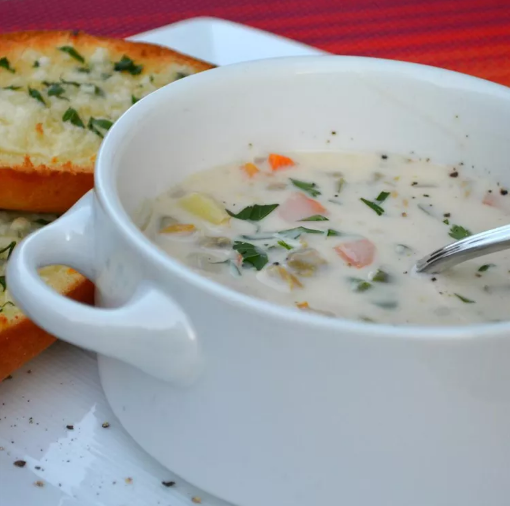

Clam Chowder

Description
Did you know you can make restaurant-worthy clam chowder at home? Well, you can! This top-rated clam chowder recipe creates rich, smooth, creamy, and wonderfully flavorful results every time.
Ingredients
- Vegetables
- Clams
- Butter
- Flour
- Cream
- Red wine vinegar
- Seasonings/li>
Steps
- Cook the vegetables in clam juice until tender.
- Make the roux, then whisk in the half-and-half.
- Stir in the vegetable mixture.
- Add the clams.
- When they're heated through, stir in the vinegar and seasonings.